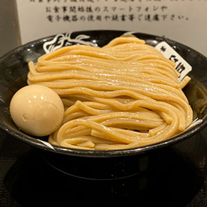
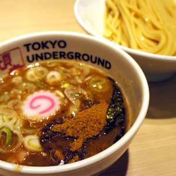
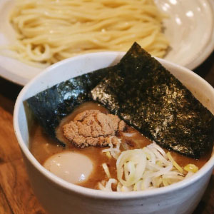

Tomita
Matsudo, Chiba
This shop is known for its thick noodles and rich dipping broth. The atmosphere is cozy and welcoming.
The staff are friendly and always greet you with a smile. Service is quick, even during busy hours.
Their signature tsukemen features a perfectly balanced broth, with hints of seafood and pork.
I especially love the homemade chili oil, which adds a spicy kick to every bite.
Too bad the location is a bit too far from Tokyo. But it really is worth the trip!
Tomita Location on Google MapsTokyo Underground
Saitama Shintoshin, Saitama
Offers a unique blend of flavors, with a focus on seasonal ingredients. The presentation is top-notch.
The dipping sauce here is lighter, with hints of citrus and yuzu that brighten up every bite. Their noodles are made fresh daily and have a delicate texture.
I love the open kitchen concept, where you can watch the chefs prepare each dish. The staff are knowledgeable and happy to recommend their favorites.
Don't miss their vegetarian tsukemen, which features a rich mushroom broth and plenty of fresh vegetables. It's a great option for anyone looking for something different.
Tokyo Underground Location on Google MapsTetsu
Akabane, Tokyo

Famous for its spicy dipping sauce and perfectly cooked noodles. This shop is a must-try for spice lovers!
The heat level can be customized, so everyone can enjoy their ideal bowl. The noodles are thick and absorb the spicy broth beautifully.
The shop is small but lively, with a bustling atmosphere during lunch hours. The walls are covered in photos of happy customers and local events.
Their homemade pickles and side dishes are the perfect complement to the main meal. I always order extra toppings to make it even more special.
Tetsu Location on Google MapsNoroshi
Omiya, Saitama
This shop is known for its innovative dipping sauces and perfectly cooked noodles. A true gem for tsukemen lovers!
Each month, they introduce a new sauce inspired by global flavors, from Italian tomato to Thai curry. The creativity keeps regulars coming back.
The noodles are springy and always served at the perfect temperature. The shop's modern decor and upbeat music make it a fun place to eat with friends.
I recommend trying their dessert tsukemen, which features sweet dipping sauces and fruit toppings. It's a surprising and delicious twist!
Noroshi Location on Google MapsFuunji
Shinjuku, Tokyo
This shop specializes in a variety of tsukemen styles, ensuring there's something for everyone. Don't miss their daily specials!
From classic pork broth to seafood and vegetarian options, the menu is diverse and exciting. The chefs are always experimenting with new recipes.
The spacious dining area is perfect for groups, and the staff go out of their way to make everyone feel welcome. I love coming here with family and friends.
Their homemade noodles are a highlight, and you can even buy packs to take home. The shop's commitment to quality is clear in every dish.
Fuunji Location on Google Maps